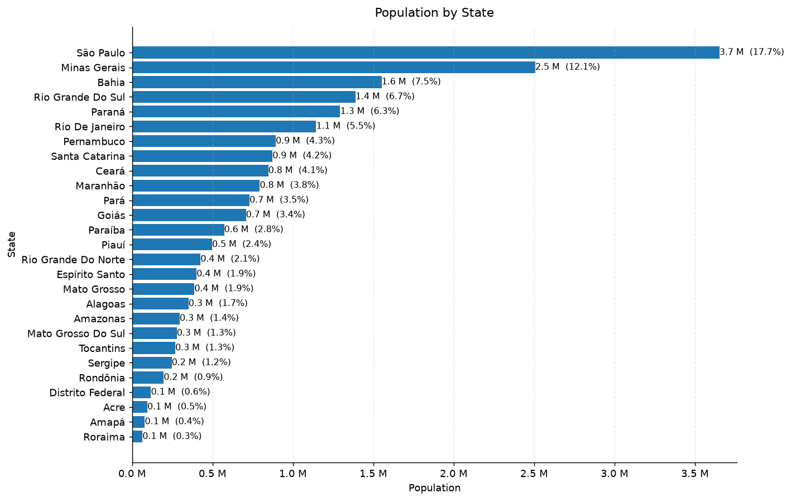

Hands-on with socio4health: effects of hydrometeorologigcal hazards and urbanization on dengue risk in Brazil#
Run the tutorial via free cloud platforms: 

This notebook provides a real-world example of how to use socio4health to retrieve, harmonize and analyze socioeconomic and demographic variables, such as the level of urbanization and access to water supply in Brazil, to recreate the dataset used in the publication Combined effects of hydrometeorological hazards and urbanisation on dengue risk in Brazil: a spatiotemporal modelling study by Lowe et al., published in The Lancet Planetary Health in 2021 (DOI). The study evaluated how the association between hydrometeorological events and dengue risk varies with these variables. This tutorial assumes an intermediate or advanced understanding of Python and data manipulation.
Setting up the environment#
To run this notebook, you need to have the following prerequisites:
Python 3.10+
Additionally, you need to install the socio4health and pandas package, which can be done using pip:
import importlib.util
missing = [p for p in ("socio4health", "matplotlib") if importlib.util.find_spec(p) is None]
if missing:
%pip install {" ".join(missing)} -q
Import Libraries#
To perform the data extraction, the socio4health library provides the Extractor class for data extraction, and the Harmonizer class for data harmonization of the retrieved date. pandas will be used for data manipulation. Additionally, we will use some utility functions from the socio4health.utils.harmonizer_utils module to standardize and translate the dictionary.
import re
import pandas as pd
import dask.dataframe as dd
import matplotlib.pyplot as plt
from matplotlib.ticker import FuncFormatter
from socio4health import Extractor
from socio4health.harmonizer import Harmonizer
from socio4health.utils import harmonizer_utils, extractor_utils
1. Load and standardize the dictionary#
To harmonize the data, provide a dictionary that describes the variables in the dataset. The study retrieved data from the 2010 census, from Instituto Brasileiro de Geografia e Estatística (IBGE). The dictionary for the census data can be found here. Follow the steps in the tutorial “How to Create a Raw Dictionary for Data Harmonization” to create a raw dictionary in Excel format.
This dictionary must be standardized and translated to English. The socio4health.utils.harmonizer_utils module provides utility functions to perform these tasks. Additionally, the socio4health.utils.extractor_utils module provides utility functions to parse fixed-width file (FWF) dictionaries, which is the format used in the IBGE census data.
raw_dic = pd.read_excel("raw_dictionary_br_2010.xlsx")
dic=harmonizer_utils.s4h_standardize_dict(raw_dic)
colnames, colspecs =extractor_utils.s4h_parse_fwf_dict(dic)
This is how the standardized dictionary looks:
dic
| variable_name | question | description | value | initial_position | final_position | size | dec | type | possible_answers | |
|---|---|---|---|---|---|---|---|---|---|---|
| 0 | V0402 | a responsabilidade pelo domicílio é de: | NaN | 1.0; 2.0; 9.0 | 107.0 | 107.0 | 1.0 | NaN | C | apenas um morador; mais de um morador; ignorado |
| 1 | V0209 | abastecimento de água, canalização: | NaN | 1.0; 2.0; 3.0 | 90.0 | 90.0 | 1.0 | NaN | C | sim, em pelo menos um cômodo; sim, só na propr... |
| 2 | V0208 | abastecimento de água, forma: | NaN | 1.0; 2.0; 3.0; 4.0; 5.0; 6.0; 7.0; 8.0; 9.0; 10.0 | 88.0 | 89.0 | 2.0 | NaN | C | rede geral de distribuição; poço ou nascente n... |
| 3 | V6210 | adequação da moradia | NaN | 1.0; 2.0; 3.0 | 144.0 | 144.0 | 1.0 | NaN | C | adequada; semi-adequada; inadequada |
| 4 | V0301 | alguma pessoa que morava com você(s) estava mo... | NaN | 1.0; 2.0 | 104.0 | 104.0 | 1.0 | NaN | C | sim; não |
| ... | ... | ... | ... | ... | ... | ... | ... | ... | ... | ... |
| 71 | V0214 | televisão, existência: | NaN | 1.0; 2.0 | 95.0 | 95.0 | 1.0 | NaN | C | sim; não |
| 72 | V4002 | tipo de espécie: | NaN | 11.0; 12.0; 13.0; 14.0; 15.0; 51.0; 52.0; 53.0... | 56.0 | 57.0 | 2.0 | NaN | C\n | casa; casa de vila ou em condomínio; apartamen... |
| 73 | V0001 | unidade da federação: | NaN | 11.0; 12.0; 13.0; 14.0; 15.0; 16.0; 17.0; 21.0... | 1.0 | 2.0 | 2.0 | NaN | A | rondônia; acre; amazonas; roraima; pará; amapá... |
| 74 | V2011 | valor do aluguel (em reais) | NaN | NaN | 59.0 | 64.0 | 6.0 | NaN | N | NaN |
| 75 | V0011 | área de ponderação | NaN | NaN | 8.0 | 20.0 | 13.0 | NaN | A | NaN |
76 rows × 10 columns
The classification model used in this tutorial is a BERT model fine-tuned for the task of classifying survey questions into categories. You can use your own model by providing the path to the model in the MODEL_PATH parameter of the harmonizer_utils.s4h_classify_rows function.
dic = harmonizer_utils.s4h_translate_column(dic, "question", language="en")
dic = harmonizer_utils.s4h_translate_column(dic, "description", language="en")
dic = harmonizer_utils.s4h_translate_column(dic, "possible_answers", language="en")
dic = harmonizer_utils.s4h_classify_rows(dic, "question_en", "description_en", "possible_answers_en",
new_column_name="category",
MODEL_PATH="dirreno/harmonize_bert_finetuned_classifier")
dic
Warning: You are sending unauthenticated requests to the HF Hub. Please set a HF_TOKEN to enable higher rate limits and faster downloads.
question translated
description translated
possible_answers translated
| variable_name | question | description | value | initial_position | final_position | size | dec | type | possible_answers | question_en | description_en | possible_answers_en | category | |
|---|---|---|---|---|---|---|---|---|---|---|---|---|---|---|
| 0 | V0402 | a responsabilidade pelo domicílio é de: | NaN | 1.0; 2.0; 9.0 | 107.0 | 107.0 | 1.0 | NaN | C | apenas um morador; mais de um morador; ignorado | the responsibility for the household is: | NaN | only one resident; more than one resident, ign... | Housing |
| 1 | V0209 | abastecimento de água, canalização: | NaN | 1.0; 2.0; 3.0 | 90.0 | 90.0 | 1.0 | NaN | C | sim, em pelo menos um cômodo; sim, só na propr... | water supply, pipeline: | NaN | yes, in at least one room; yes, only in proper... | Housing |
| 2 | V0208 | abastecimento de água, forma: | NaN | 1.0; 2.0; 3.0; 4.0; 5.0; 6.0; 7.0; 8.0; 9.0; 10.0 | 88.0 | 89.0 | 2.0 | NaN | C | rede geral de distribuição; poço ou nascente n... | water supply, shape: | NaN | general distribution network; well or spring o... | Business |
| 3 | V6210 | adequação da moradia | NaN | 1.0; 2.0; 3.0 | 144.0 | 144.0 | 1.0 | NaN | C | adequada; semi-adequada; inadequada | adequacy of housing | NaN | adequate; semi-adequate; inadequate | Housing |
| 4 | V0301 | alguma pessoa que morava com você(s) estava mo... | NaN | 1.0; 2.0 | 104.0 | 104.0 | 1.0 | NaN | C | sim; não | someone who lived with you was living in anoth... | NaN | Yes; no | Business |
| ... | ... | ... | ... | ... | ... | ... | ... | ... | ... | ... | ... | ... | ... | ... |
| 71 | V0214 | televisão, existência: | NaN | 1.0; 2.0 | 95.0 | 95.0 | 1.0 | NaN | C | sim; não | television, existence: | NaN | Yes; no | Identification |
| 72 | V4002 | tipo de espécie: | NaN | 11.0; 12.0; 13.0; 14.0; 15.0; 51.0; 52.0; 53.0... | 56.0 | 57.0 | 2.0 | NaN | C\n | casa; casa de vila ou em condomínio; apartamen... | type of species: | NaN | house; townhouse or condominium; apartment; dw... | Housing |
| 73 | V0001 | unidade da federação: | NaN | 11.0; 12.0; 13.0; 14.0; 15.0; 16.0; 17.0; 21.0... | 1.0 | 2.0 | 2.0 | NaN | A | rondônia; acre; amazonas; roraima; pará; amapá... | Federation unit: | NaN | rondônia; acre; amazon; roraima; pará; amapá; ... | Business |
| 74 | V2011 | valor do aluguel (em reais) | NaN | NaN | 59.0 | 64.0 | 6.0 | NaN | N | NaN | value of rent (in reals) | NaN | NaN | Business |
| 75 | V0011 | área de ponderação | NaN | NaN | 8.0 | 20.0 | 13.0 | NaN | A | NaN | weighting area | NaN | NaN | Housing |
76 rows × 14 columns
2. Extract data from Brazil Census 2010#
To extract data, use the Extractor class from the socio4health library. As in the publication, extract the Brazil Census 2010 dataset from the Brazilian Institute of Geography and Statistics (IBGE) website or from a local copy. The dataset is available here.
The Extractor class requires the following parameters:
input_path: TheURLor local path to the data source.down_ext: A list of file extensions to download. This can include.txt,.zip, etc.output_path: The local path where the extracted data will be saved.key_words: A list of keywords to filter the files to be downloaded. In this case, a regular expression is used to select only the files with a.zipextension that contain uppercase letters in their names.depth: The depth of the directory structure to traverse when downloading files. A depth of0means only the files in the specified directory will be downloaded.is_fwf: A boolean indicating whether the files are in fixed-width format (FWF). In this case, the files are in FWF format, so this parameter is set toTrue.colnames: A list of column names for the FWF files, extracted from the standardized dictionary.colspecs: A list of tuples indicating the start and end positions of each column in the FWF files, extracted from the standardized dictionary.file_pattern: A regular expression applied to the names of the extracted files. Each state archive contains four files (Domicilios,Pessoas,EmigracaoandMortalidade), and each one has its own fixed-width layout. The dictionary used in this example describes the household (Domicilios) layout, so only those files are read; parsing the other files with this layout would produce wrong values.cache_parquet: Parsing fixed-width text is the slowest step for a dataset of this size. Withcache_parquet=True, each file is converted to Parquet once (stored next to the source file) and every later computation reads only the columns it needs. The first run takes a few minutes; later runs reuse the cache.
bra_online_extractor = Extractor(input_path="https://ftp.ibge.gov.br/Censos/Censo_Demografico_2010/Resultados_Gerais_da_Amostra/Microdados/",
down_ext=['.txt','.zip'],
output_path="IBGE_2010_",
key_words=[r"^[A-Z0-9_]+\.zip$"],
file_pattern=r"Domicilios",
cache_parquet=True,
depth=0, is_fwf=True, colnames=colnames, colspecs=colspecs)
bra_Censo_2010 = bra_online_extractor.s4h_extract()
21:46:51 INFO: Starting data extraction...
21:46:51 INFO: Extracting data in online mode...
21:46:51 INFO: Scraping URL: https://ftp.ibge.gov.br/Censos/Censo_Demografico_2010/Resultados_Gerais_da_Amostra/Microdados/ with depth 0
21:46:54 INFO: Found 28 files to download
21:46:54 INFO: Downloading 28 files to 'IBGE_2010_'
Downloading: 100%|██████████| 28/28 [01:54<00:00, 4.08s/file]
21:48:49 INFO: Downloaded 28/28 files
Extracting: 100%|██████████| 28/28 [00:23<00:00, 1.18archive/s]
21:49:12 INFO: Extracted 112 files from 28 archives
21:49:12 INFO: Skipping 84 files not matching file_pattern 'Domicilios'
Reading: 100%|██████████| 28/28 [01:49<00:00, 3.90s/file]
21:51:01 INFO: Read 28/28 files (Parquet cache: 28 built, 0 reused)
21:51:01 INFO: Extraction completed successfully.
3. Harmonize the data#
Use the Harmonizer class from the socio4health library to harmonize the data. First, set the similarity threshold to 0.9, meaning that only variables with a similarity score of 0.9 or higher will be considered for harmonization. Next, use the s4h_vertical_merge method to merge the dataframes vertically.
har = Harmonizer()
har.similarity_threshold = 0.9
dfs = har.s4h_vertical_merge(bra_Censo_2010)
Grouping DataFrames: 100%|██████████| 28/28 [00:00<00:00, 281.89df/s]
Merging groups: 100%|██████████| 1/1 [00:00<00:00, 3.24group/s]
After merging the dataframes, set the dictionary and the categories of interest. In this case, we are interested in the "Business" category. Then, use the s4h_data_selector method to filter the dataframes based on the dictionary, categories, and a key column (in this case 'V0001', which represents the state code). The s4h_data_selector method returns a list of filtered dataframes.
The selection is lazy: no data is read until a result is computed. To inspect it, use .head(), which only reads the first rows, instead of .compute(), which would load the whole selection into memory.
har.dict_df = dic
har.categories = ["Business"]
har.key_col = 'V0001'
filtered_ddfs = har.s4h_data_selector(dfs)
21:51:16 WARNING: key_col or key_val not defined, row-wise size will not be reduced
len(filtered_ddfs)
1
filtered_ddfs[0].head()
| V0001 | V0208 | V0301 | V0222 | V0701 | V0211 | V0212 | M0201 | M0202 | M0203 | ... | M0701 | M2011 | V0202 | V0221 | V0401 | V6531 | V6532 | V6530 | V6529 | V2011 | |
|---|---|---|---|---|---|---|---|---|---|---|---|---|---|---|---|---|---|---|---|---|---|
| 0 | 12 | 01 | 2 | 2 | 2 | 1 | 1 | 2 | 2 | 2 | ... | 2 | 2 | 3 | 2 | 01 | 00000000 | 000000000 | 0000000000 | 0000000 | <NA> |
| 1 | 12 | 02 | 2 | 2 | 2 | 1 | 1 | 2 | 2 | 2 | ... | 2 | 2 | 3 | 1 | 02 | 00065500 | 000128431 | 0000256863 | 0001310 | <NA> |
| 2 | 12 | 01 | 2 | 1 | 2 | 1 | 1 | 2 | 2 | 2 | ... | 2 | 2 | 1 | 2 | 04 | 00050000 | 000098039 | 0000392157 | 0002000 | <NA> |
| 3 | 12 | 02 | 2 | 2 | 2 | 3 | <NA> | 2 | 2 | 2 | ... | 2 | 2 | 3 | 2 | 04 | 00001250 | 000002451 | 0000009804 | 0000050 | <NA> |
| 4 | 12 | 02 | 2 | 1 | 2 | 1 | 1 | 2 | 2 | 2 | ... | 2 | 2 | 1 | 1 | 05 | 00092000 | 000180392 | 0000901961 | 0004600 | <NA> |
5 rows × 42 columns
Finally, we can perform some analysis on the harmonized data. In this case, we will calculate the total population by state (V0001) using the variable V0401, which represents the total population in each census tract. We will then create a horizontal bar plot to visualize the population distribution across states using matplotlib.
ddf = filtered_ddfs[0][["V0001", "V0401"]]
ddf = ddf.assign(
V0001 = ddf["V0001"].astype("category"),
V0401 = dd.to_numeric(ddf["V0401"], errors="coerce").astype("float64").fillna(0.0)
).categorize(columns=["V0001"])
pop = ddf.groupby("V0001", observed=True)["V0401"].sum(split_out=8).compute()
pop = pop[pop>0]
row = dic.loc[dic["variable_name"]=="V0001", ["value","possible_answers"]].iloc[0]
vals = [s for s in re.split(r"\s*;\s*", str(row["value"]).strip(" ;")) if s]
labs = [s for s in re.split(r"\s*;\s*", str(row["possible_answers"]).strip(" ;")) if s]
idx = pop.index
if pd.api.types.is_integer_dtype(idx):
keys = [int(float(v)) for v in vals]
elif pd.api.types.is_float_dtype(idx):
keys = [float(v) for v in vals]
else:
keys = [str(int(float(v))) for v in vals]
if len(keys) != len(labs):
raise ValueError(f"Misalignment: {len(keys)} codes vs {len(labs)} names")
code2name = dict(zip(keys, labs))
pop_named = pop.rename(index=code2name)
top = pop_named.sort_values()
top_titled = top.copy()
top_titled.index = [str(s).title() for s in top.index]
fig, ax = plt.subplots(figsize=(11,7), dpi=130)
ax.barh(top_titled.index, top_titled.values)
ax.spines["top"].set_visible(False)
ax.spines["right"].set_visible(False)
ax.set_title(f"Population by State", pad=10)
ax.set_xlabel("Population")
ax.set_ylabel("State")
ax.xaxis.set_major_formatter(FuncFormatter(lambda x, p: f"{x/1e6:.1f} M"))
total = pop_named.sum()
for i, v in enumerate(top_titled.values):
ax.text(v, i, f"{v/1e6:.1f} M ({v/total:.1%})", va="center", ha="left", fontsize=9)
ax.grid(axis="x", linestyle="--", alpha=0.3)
plt.margins(x=0.03)
plt.tight_layout()
plt.show()
